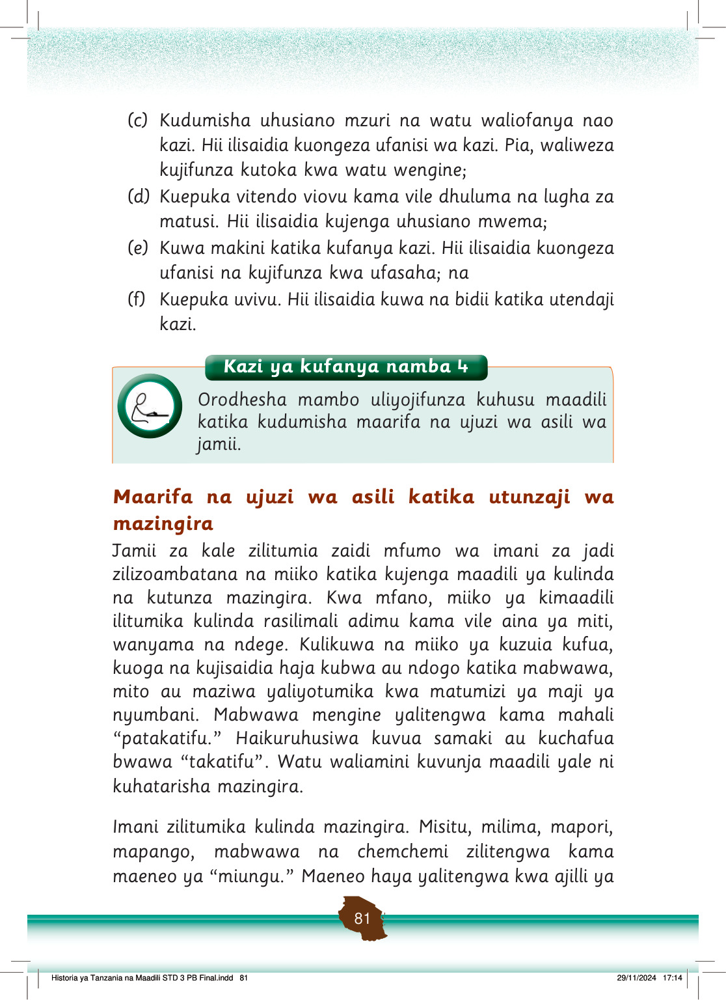

(c)
Kudumisha uhusiano mzuri na watu waliofanya nao kazi.
Hii ilisaidia kuongeza ufanisi wa kazi.
Pia, waliweza kujifunza kutoka kwa watu wengine;
(d)
Kuepuka vitendo viovu kama vile dhuluma na lugha za matusi.
Hii ilisaidia kujenga uhusiano mwema;
(e)
Kuwa makini katika kufanya kazi.
Hii ilisaidia kuongeza ufanisi na kujifunza kwa ufasaha; na
(f)
Kuepuka uvivu.
Hii ilisaidia kuwa na bidii katika utendaji kazi.
Maarifa na ujuzi wa asili katika utunzaji wa mazingira
Jamii za kale zilitumia zaidi mfumo wa imani za jadi zilizoambatana na miiko katika kujenga maadili ya kulinda na kutunza mazingira.
Kwa mfano, miiko ya kimaadili ilitumika kulinda rasilimali adimu kama vile aina ya miti, wanyama na ndege.
Kulikuwa na miiko ya kuzuia kufua, kuoga na kujisaidia haja kubwa au ndogo katika mabwawa, mito au maziwa yaliyotumika kwa matumizi ya maji ya nyumbani.
Mabwawa mengine yalitengwa kama mahali “patakatifu.”
Haikuruhusiwa kuvua samaki au kuchafua bwawa “takatifu”.
Watu waliamini kuvunja maadili yale ni kuhatarisha mazingira.
Imani zilitumika kulinda mazingira.
Misitu, milima, mapori, mapango, mabwawa na chemchemi zilitengwa kama maeneo ya “miungu.”
Maeneo haya yalitengwa kwa ajili ya
Kazi ya kufanya namba 4
Kazi ya kufanya namba 4: Orodhesha mambo uliyojifunza kuhusu maadili katika kudumisha maarifa na ujuzi wa asili wa jamii.
Orodhesha mambo uliyojifunza kuhusu maadili katika kudumisha maarifa na ujuzi wa asili wa jamii.